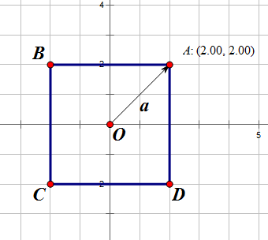
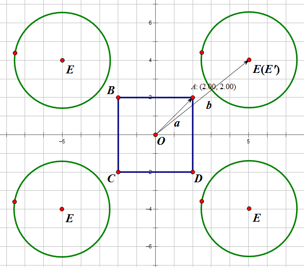
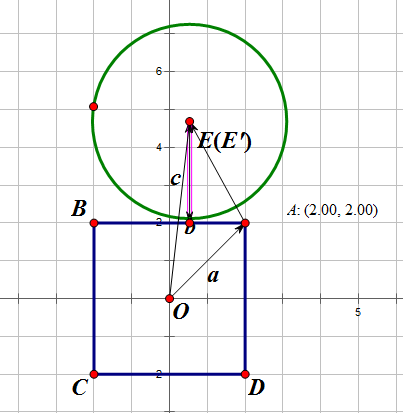
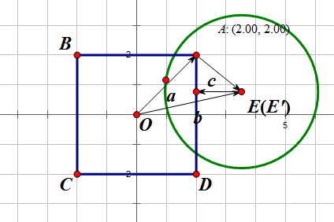

算法介绍
首先，对于矩形来说，将坐标系原点移到矩形的中心，并且将从原点到第一象限的顶点的向量$a$求出来。

其次，无论圆心$E$在哪一个象限，都将其通过轴对称转换到第一象限，并且求出原点到转换后的圆心$E’$的向量$b$。

接下来是最关键的一步：算出$A$到$E’$的向量$c$，并且把向量$c$中的负值全部置为0，得到最终的向量$c$。
两个分量都大于0

$x$值小于0

$y$值小于0

$x$和$y$都小于0时，最终的向量为$(0, 0)$。
因此最终只要比较半径$r$与向量$c$的模长的大小即可，如果需要在代码中实现，则无需开方。
- 若$c<r$，则圆与矩形相交。
- 若$c=r$，则圆与矩形相切。
- 否则二者相离。
代码实现
1 | bool Intersection(float2 c, float2 h, float2 p, float r) |
思考
这种算法可以扩展至高维。例如需要判定Box与球形是否相交，则可以依次算法类推至三维的判定。
这类问题通常都可以转化为闵可夫斯基和的问题，传送门。